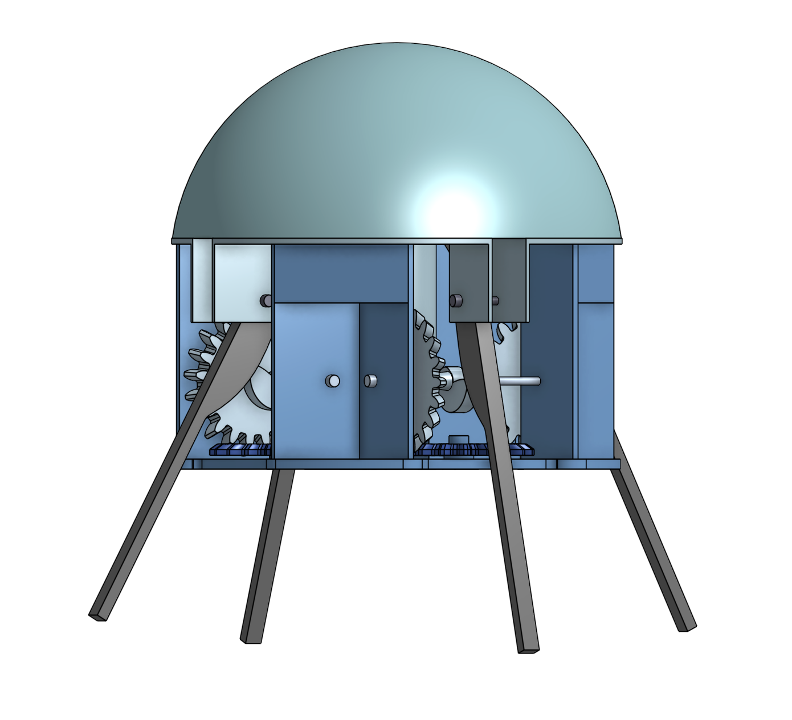
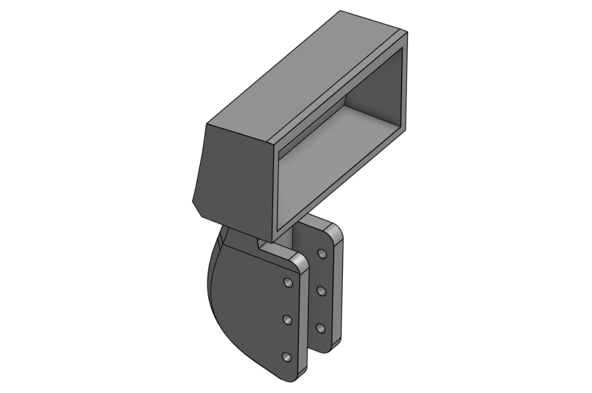
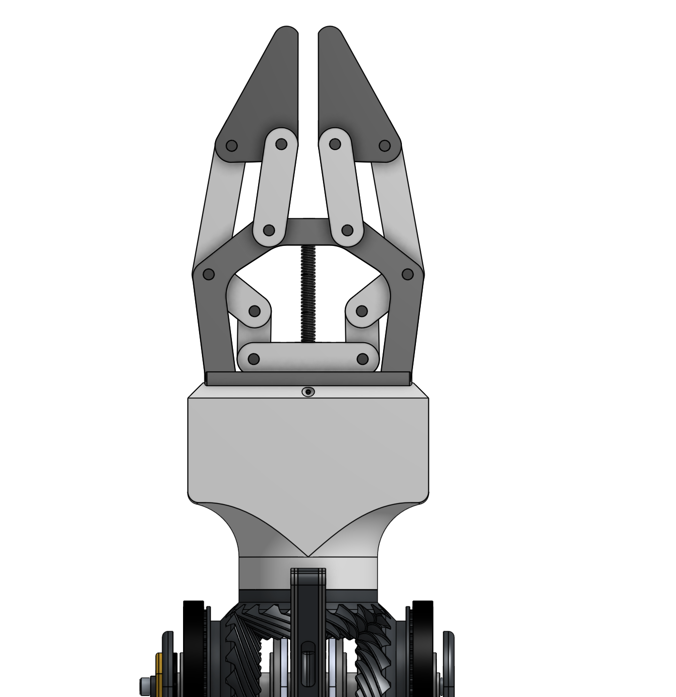

Mechanical design · Robotics · Harsh environments
I design mechanisms for robots that work where people can't.
Aerospace Engineering student at UC San Diego. I design hardware for a Mars rover and an Arctic surface vessel, and I designed and simulated a jellyfish-inspired underwater propulsion mechanism.
SCHOOLUC San Diego
MAJORB.S. Aerospace Eng.
GRADJune 2029 · GPA 3.9
CAD / SIMOnshape · CATIA · Fusion 360 · ADAMS · FEA
SEEKINGMech./Aero. design & robotics, research roles
01 · Featured

DWG 01 · Research · Genex Space
JELIX: jellyfish-inspired underwater propulsion
A propeller-free propulsion mechanism. A cam–follower drive with spring return snaps four ribs to push out a jet of water, the way a jellyfish pulses. I designed the cam in CATIA V5 and simulated the motion in MSC ADAMS.
80 mmrib-tip travel (sim)
0–40°rib stroke
12 scycle at 5 rpm
Simdesign & simulation study
CATIA V5MSC ADAMSKinematicsFree-body model
Read the case study →
02 · Team engineering

DWG 02 · Yonder Dynamics · URC 2026
Mars rover arm: science claw & electronics enclosure
- Four-bar, dual-servo claw that collected samples at URC 2026
- Forearm enclosure redesigned: 178 → 216 mm (+21%)
- FEA support on the elbow joint
ROLEMech. design
TOOLSOnshape · FEA
STATUSClaw built, used

DWG 03 · Yonder Deep · Arctic USV
Arctic surface vessel: frame, sensor mount, pool tests
- Co-designed 6061-T6 aluminum pontoon frame
- LiDAR mount designed in Fusion 360
- Two pool tests: buoyancy, power, hydrophone noise
ROLECo-design · test
TOOLSFusion 360
STATUSPool tested

DWG 04 · Adapted design · Onshape
Lead-screw robotic gripper
- Central lead screw drives mirrored four-bar linkages
- Adapted and modeled in Onshape as a team design task
- Motion study and render
ROLEAdapted · modeled
TOOLSOnshape
STATUSCAD + motion sim
Also
Other work
NASA HuLC 2026Co-researched and co-wrote T-PANS, a tunable viscoelastic damping concept for life-support noise on crewed lunar missions; I wrote the Design Rationale & Value section.
AIAA UCSDProject Coordinator: recruited 32 students from 57+ applicants onto four NASA competition teams.
Big Data RhinoIntern, summer 2026: Python analysis of satellite data for proof-of-concept products.